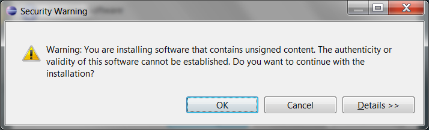

Configurando um projeto no Eclipse 3.6 (Helios)
Atenção!
Esta seção está aqui apenas para referência, uma vez que há um tutorial para o Eclipse 3.7 (Indigo). Caso você já utilize o Eclipse 3.7, vá para o tutorial do Indigo. Nesse artigo também há diversas outras instruções de como usar o STM32 no Eclipse.
Abra o Eclipse e vá no menu Help->Install New Software... Clique no botão "Add..." e adicione o seguinte repositório:
Name: GNU ARM Eclipse - Location: http://gnuarmeclipse.sourceforge.net/updates
No campo "Work with", selecione "--All Available Sites--". Selecione o pacote:
- CDT GNU Cross Development Tools
- GNU ARM C/C++ Development Support
e clique em "Next" duas vezes. Selecione "I accept the terms of the license agreements" e clique em "Finish". O Eclipse irá baixar os pacotes. Será mostrado um aviso de segurança, pois o plugin não é assinado digitalmente. Aceite clicando em OK. Ao final da instalação, reinicie o Eclipse clicando em "Restart Now" na janela que irá aparecer.

Crie um novo projeto no menu File->New->C Project. Se isto não funcionar, vá em File->New->Project. Na janela que aparecer, selecione C/C++->C Project.
Coloque um nome no projeto em "Project name". Em "Project type", selecione ARM Cross Target Application->Empty Project". Em "Toolchain", escolha o toolchain instalado, neste caso, ARM Windows GCC (Sourcery G++ Lite) Clique em "Finish".
Para fins de organização, crie pastas para separar os tipos de arquivos.
Neste caso, criei inc, src e lib, sendo que o src eu criei como source folder.
No menu Project->Properties vá em C/C++ Build->Settings. Quando possível, vá em "Configuration" e troque para "[ All configurations ]", de forma que as configurações sejam válidas tanto para Debug quanto para Release. Se desejado, é possível apagar a versão Release.
Na aba "Tool Settings" há vários itens. Como o nome é diferente para cada toolchain, cada utilitário será referenciado neste tutorial apenas com seu nome básico.
Assim, ARM Sourcery Windows GCC C Linker será referenciado aqui apenas como GCC C Linker. Para os compiladores, as opções podem ser as mesmas tanto para o compilador C quanto para o C++ (no caso de um projeto C++).
Se desejado, vá em todos os compilers->Optimization e ajuste as opções de otimização, exemplo Optimization level=Optimize size (-Os). Ative -ffunction-sections e -fdata-sections e vá em GCC C++ Linker->General e ative a caixa "Remove unused sections (-Xlinker --gc-sections)".
Ainda nos compilers, vá no subitem "Directories" e adicione as seguintes pastas:
${workspace_loc:/${ProjName}/inc}
../../STM32F10x_StdPeriph_Lib/Libraries/STM32F10x_StdPeriph_Driver/inc/
../../STM32F10x_StdPeriph_Lib/Libraries/CMSIS/CM3/CoreSupport
../../STM32F10x_StdPeriph_Lib/Libraries/CMSIS/CM3/DeviceSupport/ST/STM32F10x
No subitem "Preprocessor" dos compiladores, no campo "Defined symbols (-D)", adicione:
STM32F10X_MD
para Medium Devices, ou o referente à densidade do chip usado (por exemplo STM32F10X_HD para High-density devices), de acordo com os #define do arquivo
workspace\STM32F10x_StdPeriph_Lib\Libraries\CMSIS\CM3\DeviceSupport\ST\STM32F10x\stm32f10x.h
Copie o arquivo de startup (por exemplo startup_stm32f10x_md.s) da pasta
STM32F10x_StdPeriph_Lib\Libraries\CMSIS\CM3\DeviceSupport\ST\STM32F10x\startup\TrueSTUDIO
para a pasta lib.
Renomeie este arquivo para ter uma extensão .S (maiúsculo) ou .asm.
Opcional: em GCC C Compiler->Miscellaneous, troque a opção "Language Standard" para "ISO C99 with GNU Extensions (-std=gnu99)" para obter acesso aos recursos do último padrão da linguagem C. Da mesma forma, em GCC C++ Compiler->Miscellaneous, troque para "ISO 2009 C++ with GNU Extensions (-std=gnu++0x)".
Vá no item GCC C++ Linker->General e coloque como "Script file(-T)":
..\..\STM32F10x_StdPeriph_Lib\Project\STM32F10x_StdPeriph_Template\TrueSTUDIO\STM3210B-EVAL\stm32_flash.ld
Este arquivo é um linker script para o STM32F103RB. Para utilizar outro chip, pode-se procurar em outros exemplos de projetos ou copiar o arquivo para a pasta do projeto, alterando as linhas de interesse e o caminho do script do linker nas preferências do projeto. Uma rápida comparação entre os projetos para placas STM3210B-EVAL e STM3210E-EVAL mostra que as linhas mais importantes são a 36, 45 e 46, referentes aos tamanhos de FLASH e RAM.
Caso tenha bibliotecas pré-compiladas (opcional):
- copie
libstdPeriphLibs.aparaworkspace\STM32F10x_StdPeriph_Lib - No subitem Libraries, adicione
../../STM32F10x_StdPeriph_Libà lista "Library search path (-L)" estdPeriphLibsà lista de "Libraries (-l)"
Opcional: Para mostrar os tamanhos de cada arquivo objeto, vá em GNU Print Size->General e adicione em "Other flags" o texto (sem aspas) */*.o
Copie os arquivos .h e .c da pasta STM32F10x_StdPeriph_Lib\Project\STM32F10x_StdPeriph_Template para a pasta do projeto.
Separe respectivamente nos diretórios inc e src, exceto o arquivo system_stm32f10x.c, que vai para o lib.
Caso deseje que o microcontrolador opere a uma velocidade diferente de 72MHz, abra o arquivo system_stm32f10x.c, comente a linha
#define SYSCLK_FREQ_72MHz 72000000
e descomente a linha da velocidade desejada.
Em algumas placas pode haver um bug que pode fazer com que o microcontrolador fique com a velocidade diferente do previsto, caso o cristal não se estabilize a tempo.
Para resolvê-lo, dentro da função SetSysClockTo72(void) (ou equivalente para outras velocidades) mude as referências HSE_STARTUP_TIMEOUT para HSE_STARTUP_TIMEOUT*2:
} while((HSEStatus == 0) && (StartUpCounter != HSE_STARTUP_TIMEOUT*2));
Isso dará mais tempo para o cristal estabilizar.
No arquivo stm32f10x_conf.h, comente os periféricos que não serão usados no projeto e descomente os que serão usados.